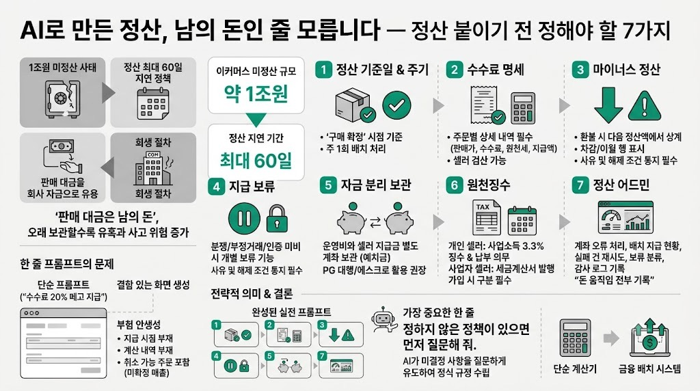

헤이제임스MORNING DIGEST · 2026-07-26 · 헤이제임스 - AI 쉽게 배우기🎬 영상
AI로 만든 정산, 남의 돈인 줄 모릅니다 — 정산 붙이기 전 정해야 할 7가지

01핵심 개요
항목
내용
채널
헤이제임스 - AI 쉽게 배우기
제목
AI로 만든 정산, 남의 돈인 줄 모릅니다 — 정산 붙이기 전 정해야 할 7가지
길이
약 9분 27초(567초)
핵심결론 1
재작년 국내 대형 이커머스 두 곳이 판매자 정산을 최대 60일까지 미루는 정책 때문에 약 1조원 규모의 미정산 사태로 회생 절차에 들어갔다
핵심결론 2
"판매 금액에서 수수료 20% 떼고 지급"처럼 한 줄짜리 프롬프트로 AI에게 정산 기능을 만들게 하면 지급 시점·계산 내역·미확정 매출 포함 여부가 전부 빠진 결함 있는 화면이 나온다
핵심결론 3
정산 붙이기 전 반드시 정해야 할 7가지(기준일·주기, 수수료 명세, 마이너스 정산, 지급 보류, 자금 분리 보관, 원천징수, 정산 어드민)를 조항화한 프롬프트를 쓰면 AI가 실제 운영 가능한 정산 시스템을 만들어 준다
02핵심 내용 구조
1) 사건의 발단 — 1조원 미정산 사태
재작년 7월 국내 대형 이커머스 두 곳의 정산이 멈추면서 판매자들이 받지 못한 돈이 약 1조원에 달했다.
돈이 묶인 판매자들은 빚으로 버티다 무너졌고, 이는 소비자 환불 대란으로 번졌으며 두 회사는 결국 회생 절차에 들어갔다.
원인은 해킹이나 서버 장애가 아니라 정산 정책 설계 자체였다. 다른 마켓은 구매 확정 후 하루~나흘이면 판매 대금을 지급하는데, 이 두 곳은 구매 후 최대 60일까지 정산을 미뤘다.
두 달 치 판매 대금이 회사 금고에 쌓이면서 그 돈이 '회사 돈'처럼 보이기 시작했고, 실제로 인수 자금 등으로 흘러간 정황이 있었다. 판매 대금은 원래 남의 돈이며, 오래 들고 있을수록 유혹과 사고 위험이 커진다는 것이 핵심 교훈이다.
셀러가 단 10명뿐인 소규모 플랫폼에서도 같은 구조적 위험이 동일하게 작동한다는 점이 강조된다.
2) 실험 — 한 줄 프롬프트로 만든 정산 기능의 구멍
가상의 프리랜서 재능 마켓 "재능곡간"(수수료 20%)을 설정해, AI에게 정산 기능을 두 가지 방식으로 만들게 하는 실험을 진행한다.
첫 번째는 "재능곡간의 판매자 정산 기능 만들어 줘. 판매 금액에서 수수료 20% 떼고 지급해 주면 돼"라는 한 줄짜리 프롬프트다. 코드와 화면은 금방 나오지만 세 가지가 빠져 있다.
- 이 돈이 언제 입금되는지 시점 정보가 없다. - 수수료를 어떻게 계산했는지 내역(명세)이 없다. - 가장 큰 문제로, 아직 작업이 진행 중이라 취소될 수 있는 주문까지 "정산 예정 금액"에 포함되어, 아직 일어나지 않은 매출을 이미 줄 돈으로 잡아두고 있다.
운영자 화면은 더 위험하다. 지급 대기 총액과 회사 계좌 잔액이 한 화면에 나란히 표시되는데, 판매자에게 줄 돈과 회사 운영비가 한 통장에 섞여 있어 잔액만 보면 회사에 돈이 많아 보이는 착각을 일으킨다. 이 착각이 바로 앞서 소개한 1조원 사태의 출발점과 같은 구조다.
게다가 "전체 지급" 버튼을 누르면 검증·보류·기록 없이 43명에게 즉시 돈이 나가는 구조였다.
원인은 AI에게 정산이 단순히 "판매 금액 곱하기 80%"라는 뺄셈 한 번으로 이해되기 때문이다. 실제 정산은 남의 돈을 보관했다가 조건에 맞춰 돌려주는 일이며, 언제 확정하고 얼마나 보관하고 어떤 조건에 멈추고 세금을 어떻게 뗄지는 전부 '정책'의 문제라는 것이 핵심 지적이다.
3) 정산 붙이기 전 정해야 할 7가지 (조항별 상세)
기준은 '주문 시점'이 아니라 '구매 확정' 시점이다. 구매자가 결과물을 직접 확인·확정하거나, 전달받고 7일 동안 응답이 없으면 자동으로 확정 처리된다.
그 확정 시점부터 정산 대상으로 잡고, 지급은 매주 수요일에 배치로 묶어 처리한다.
실제로 그 미정산 사태 이후 법 개정도 같은 방향으로 이뤄져, 온라인 플랫폼의 정산 기한을 구매 확정일 기준으로 제한하고 있다. 주기가 짧을수록 셀러도 안전해지고, 플랫폼이 들고 있는 '남의 돈'도 줄어든다.
실전 버전 화면에는 주문마다 4칸(판매가, 수수료율과 금액, 원천세, 최종 지급액)이 표시된다. 예시로 판매가 35만원, 수수료 20%(7만원), 원천세 3.3%(9,240원)를 빼면 지급액은 27만760원이 된다.
셀러가 직접 계산기로 검산할 수 있는 수준의 명세가 필요하며, 이게 없으면 정산 문의가 고객센터 1순위 민원이 된다. PG(결제대행) 수수료를 수수료에 포함할지 별도로 뗄지도 이 단계에서 정한다.
예시: 지난주 425,480원을 지급한 주문이 이번 주에 환불되는 경우, 셀러에게 전화해서 돈을 돌려받는 대신 이번 주 새 정산액(27만760원)에서 환불 차감액을 먼저 상계한다.
차감액이 새 정산액보다 크면 이번 주 지급은 0원 처리하고, 남은 금액(154,720원)은 다음 정산 회차로 이월한다. 정산 내역은 더하기만 있는 장부가 아니라 차감과 이월이 행(row)으로 보여야 분쟁이 생기지 않는다.
분쟁이 접수된 주문, 부정 거래가 의심되는 패턴, 계좌 인증이 안 된 셀러의 경우 해당 금액만 개별적으로 멈출 수 있어야 한다.
보류만큼 중요한 것이 보류 사유와 해제 조건을 셀러에게 통지하는 절차다. 말없이 돈이 안 들어오면 셀러 입장에서는 그 자체로 '미정산 사고'로 인식된다.
이번 사태가 실제로 터진 지점이다. 셀러에게 지급할 돈은 회사 운영비와 다른 별도 계좌에 예치금으로 보관해야 한다. 법 개정 방향도 별도 관리와 외부 예치를 의무화하는 쪽으로 가고 있다.
플랫폼이 결제대금 정산에 직접 관여하면 전자금융거래법상 PG(전자지급결제대행업) 등록 의무가 발생하며, 등록 없이 하면 형사 처벌 대상이 된다. 그래서 소규모 팀은 PG사의 정산 대행이나 에스크로를 활용해 돈을 직접 만지지 않는 구조로 시작하는 것이 정석이다.
개인 프리랜서 셀러에게 대금을 지급할 때는 지급하는 쪽(플랫폼)이 사업소득 3.3%를 원천징수하고, 다음 달 10일까지 신고·납부할 의무가 있다. 이는 셀러의 의무가 아니라 플랫폼의 의무다.
사업자 셀러의 경우는 반대로 원천징수 없이 지급하고, 플랫폼 수수료에 대한 세금계산서를 매월 발행한다. 따라서 셀러 가입 시점에 개인/사업자 구분을 미리 받아둬야 한다.
계좌 오류 등으로 이체가 실패하는 경우는 반드시 발생한다. 실전 버전 어드민 화면에는 판매자 예치 계좌와 운영 계좌가 분리 표시되고, 이번 주 배치는 142명에게 지급 완료, 실패 2건은 재시도 예약, 보류 건은 사유별로 분류돼 보인다.
감사 로그에는 누가 언제 보류하고 해제했는지가 전부 기록으로 남는다. "돈이 움직인 기록은 전부 남긴다"는 것이 정산 시스템 설계의 원칙이다.
4) 완성된 실전 프롬프트와 핵심 문장
위 7가지를 전부 조항으로 담은 실전 프롬프트를 사용하면, 기준일과 주기, 4칸 명세, 마이너스 정산, 보류, 분리 관리, 세금, 어드민까지 조항별로 반영된 결과물이 나온다.
프롬프트의 마지막 줄이 가장 중요하다고 강조된다. "정하지 않은 정책이 있으면 먼저 질문해 줘." 이 한 줄을 넣으면 AI가 최소 지급 금액처럼 미처 정하지 않은 결정 사항을 먼저 되물어보고, 그 답변이 곧 서비스의 정식 규정이 된다.
03기술적 맥락
정산(settlement) 시스템은 단순 계산기가 아니라, "남의 돈을 보관했다가 정해진 조건에 따라 돌려주는" 금융 성격의 배치(batch) 처리 시스템이다. 확정 시점 판정, 명세 생성, 차감·이월, 보류, 자금 분리, 세금 처리, 감사 로그까지 각각 별도의 정책 결정이 필요하다.
영상 속 데모는 Ruby on Rails로 시연되는데, 정산이 "매주 수요일 배치로 도는" 주기적 작업이라는 점과 Rails에 내장된 스케줄러, 백그라운드 잡(지급 처리·재시도), 메일러(명세·보류 안내 발송) 세 요소가 외부 연동 없이 정산 시스템 구현에 바로 활용된다는 점이 소개된다. 학습 데이터가 풍부해 AI가 특히 잘 짜는 프레임워크라는 평가도 곁들여진다.
PG(전자지급결제대행)사의 정산 대행 서비스를 쓰더라도, 돈 보관·계좌 검증·이체 실행은 PG사가 대신해 주지만 수수료율·정산주기·보류 기준·명세 방식·세금 처리 같은 정책적 결정은 여전히 플랫폼 운영자의 몫이라는 점이 강조된다.
04전략적 의미
"AI에게 프롬프트 한 줄로 정산 기능을 맡기면 위험하다"는 메시지는, 코드 생성 자체보다 정책 설계(무엇을, 언제, 얼마나, 어떤 조건으로 지급할지)가 훨씬 중요하다는 점을 보여준다. 이는 AI 코딩 도구가 일반화될수록 "결정을 대신 안 해준다"는 한계를 이해하고 활용해야 한다는 시사점으로 연결된다.
정산·자금 흐름처럼 법적 책임(전자금융거래법, 세법)이 얽힌 영역에서는 AI가 만든 코드를 그대로 배포하기 전에 도메인 지식(정산 주기 규제, PG 등록 의무, 원천징수 의무)을 사람이 직접 프롬프트에 명시해야 사고를 예방할 수 있다.
"정하지 않은 정책이 있으면 먼저 질문해 줘"라는 한 줄을 프롬프트에 넣는 습관은, AI 활용 시 암묵적 가정을 줄이고 결정 사항을 명시적으로 드러내는 범용 프롬프트 엔지니어링 원칙으로 확장 가능하다.
05핵심 워크플로우·방법론 (정산 붙이기 전 절차)
사고 사례로 리스크 인식하기: 정산 지연이 왜 위험한지(1조원 사태 사례)를 먼저 이해하고 시작한다. "판매 대금은 회사 돈이 아니라 남의 돈"이라는 감각을 전제로 깐다.
취약한 버전으로 문제 노출시키기: 정책 없이 "수수료 떼고 지급"이라는 한 줄 프롬프트로 먼저 만들어보고, 지급 시점·명세·미확정 매출 포함 여부 등 어떤 구멍이 생기는지 직접 확인한다.
① 기준일·주기 정하기: 구매 확정 시점(직접 확정 또는 7일 자동 확정)을 정산 기준으로 삼고, 지급 주기(예: 매주 수요일 배치)를 정한다.
② 수수료 명세 구조 설계하기: 판매가·수수료·원천세·최종 지급액 4칸을 셀러가 검산 가능하도록 노출하고, PG 수수료 처리 방식을 정한다.
③ 마이너스 정산 규칙 정하기: 환불 발생 시 이번 회차 정산액에서 우선 상계하고, 부족분은 다음 회차로 이월하는 규칙을 프롬프트에 명시한다.
④ 지급 보류 조건과 통지 절차 정하기: 분쟁·부정거래 의심·미인증 계좌 등 보류 트리거를 정의하고, 사유·해제 조건을 셀러에게 통지하는 절차를 포함한다.
⑤ 자금 분리 보관 및 PG 등록 여부 확인하기: 셀러 몫 예치금과 회사 운영비 계좌를 분리하고, 직접 정산 관여 시 PG 등록 의무가 있는지 법적으로 확인한다(작은 팀은 PG 대행·에스크로 활용 권장).
⑥ 세금(원천징수) 처리 규칙 정하기: 셀러가 개인인지 사업자인지 구분해 원천징수 3.3% 또는 세금계산서 발행 중 맞는 절차를 적용한다.
⑦ 지급 실패·정산 어드민 설계하기: 이체 실패 시 재시도 로직, 보류 건 사유별 분류, 감사 로그(누가 언제 보류·해제했는지) 기록 체계를 마련한다.
최종 프롬프트에 "미정 정책 질의" 조항 추가하기: "정하지 않은 정책이 있으면 먼저 질문해 줘"라는 문장을 프롬프트 마지막에 넣어, AI가 놓친 의사결정 사항을 스스로 되묻게 만든다.
06활용 시나리오
프리랜서 마켓, 커머스 플랫폼, 크라우드펀딩 등 '판매자에게 돈을 나눠주는' 서비스를 AI 코딩 도구로 개발하려는 1인 개발자나 소규모 팀이, 정산 기능 설계 전 체크리스트로 활용할 수 있다.
이미 운영 중인 서비스의 정산 로직을 점검하려는 운영자가, 마이너스 정산·지급 보류·자금 분리 항목이 빠져 있지 않은지 자가 진단하는 데 참고할 수 있다.
비개발자 창업자가 외주나 AI에게 정산 기능 개발을 맡길 때, 요구사항 명세서(RFP)에 포함해야 할 정책 항목을 빠짐없이 전달하는 용도로 활용할 수 있다.
PG사 도입을 검토 중인 팀이, PG 대행이 처리해주는 영역(자금 이체·계좌 검증)과 직접 정해야 하는 영역(수수료율·보류 기준·세금 처리)을 구분해 계약 범위를 정할 때 참고할 수 있다.
07현황 및 전망
미정산 사태 이후 국내 법 개정이 온라인 플랫폼의 정산 기한을 구매 확정일 기준으로 제한하고, 판매대금의 별도 관리·외부 예치를 의무화하는 방향으로 이뤄지고 있어, 향후 신규 플랫폼은 설계 단계부터 이 규제를 반영해야 할 가능성이 크다.
AI 코딩 도구가 보편화되면서 "코드는 AI가 짜고 정책은 사람이 정한다"는 역할 분담이 정산·결제처럼 법적 책임이 따르는 영역에서 더욱 중요해질 것으로 보인다.
영상은 실전 프롬프트 전문(조항별 해설·체크리스트 포함)을 PDF로 별도 배포한다고 언급하며, 이런 '체크리스트형 프롬프트 템플릿' 공유가 AI 활용 콘텐츠의 후속 트렌드로 이어질 가능성을 보여준다.